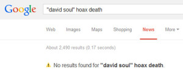

David Soul‘s name keeps coming up in discussions. Many people seem to recall him dying, years ago.
David Soul‘s name keeps coming up in discussions. Many people seem to recall him dying, years ago.
Here are some comments from this website:
Perry Ware said:
We also remember that David Soul of the 70′s show Starsky and Hutch comiting suicide on or near christmas because he was dispondant over his wife’s cancer! Even news reports of relatives and police discovering his body underneath the christmas tree. You can imagine myself and my wife’s reaction when we saw David Soul make an appearance as a cameo on the remake of Starsky and Hutch movie. We sat in silence and stunned by the revelation that Mr. Soul was indeed alive.
Sapphire said:
OMG David Soul is still alive? I remember exactly the same as yourself, Perry..Christmas time, despondent/depressed etc and family finding him and this was years and years ago.
This is way too weird for words.
Marna Ehrech said:
yes, he died!
After that, Li suggested that David Soul, of Starsky & Hutch, might have been mixed up with Pete Duel, of Alias Smith & Jones. Part of Peter Duel’s suicide matches the David Soul memory, but the context is very different.
Kate said:
i also remember clearly the David Soule death—(i am shocked, up until I read this just now I still thought he was dead!)
nigel said:
david soul…died along time ago too.
tsadowq said:
David Soul committed suicide near Christmas (years ago), butreturns for a cameo as “Hutch”.
Jane said:
I’m 100% certain that David Soul is dead.
As I’m writing this, David Soul (born 1943) is alive and well and continuing his career as an actor and musician… and — eerily — he doesn’t look that different than he did during the Starsky & Hutch years. If he’s had a face lift, it’s one of the best and most natural-looking lifts I’ve seen.
Photo credit: Urregoluis at en.wikipedia
I remember that David Soul committed suicide because I clearly remember my sister standing at the top of our den stairs and telling the story to my mother, how he’d become depressed about his wife and how sad it was when people become sick like that. I remember I was a little girl and I thought that I agreed that it was sad too, but I was also jealous, because my sister was talking to mom and not me. Her and my mother were very close and I was often jealous of their interactions and remember feeling invisible during this interaction about David Soul.
lda,
I appreciate it when people leave comments like yours. The rich, contextual information — that it’s not just “Oh, I thought I heard that on the news,” but a complete memory — makes this theory seem more likely.
Sincerely,
Fiona
While reading this post I decided to research about David Soul, I came across this interesting ‘article’ that is dated as updated Jan 2 2014 (I am writing this on New Years day 2014, but that it still possible if the article is updated in a different time zone, still creepy) and they are claiming David Soul is a victim of (yet another?) death hoax (I’m so creeped out to find an article about this man alive or dead complex dated the same day as I’m randomly looking him up. So weird!
Derekka,
I’ve removed the link you included. The site you linked to is either a spam site or a parody. (Since the author of that article was “Jessica Simpson,” I’m leaning towards it being a parody.)
As of 2 Jan 2014, the real news reported no 2014 New Year’s Day hoax about David Soul. Not unless you spent New Year’s Day in a parallel reality, that is.

Your other comment — in another thread — was not approved, due to its extreme ethnocentric content. I’m giving this comment the benefit of the doubt, but these look a lot like spam or part of a backlinking effort.
Just so you (and others) know: This site does not use the default setting whereby anyone with two approved comments can, in the future, comment without moderation. I manually review every comment before it appears at this site.
I’d like to think that, in your enthusiasm, you commented in haste. That happens when people finally find people who share their memories.
If that’s the case, I hope you’ll continue to be part of the conversation, and forgive how harsh this may have sounded.
Sincerely,
Fiona
But fiona, The site is putting real spanner in our topic,what they do is they are simply renewing the date of their story so whenever you visit the site it will give current date for any celebrity not just david soul,derekka fell for their gag.As for poor education,the topic is too awesome, it is very natural that many people will simply think that we are a bunch of crackpots;that so many have responded with genuine feeling of anomaly is a big achievement of this site.A poorly educated employee of Edison,Nikola Tesla,stunned the world with his invention of alternating current and transformed the world literally with his transformer.A similar sounding ,alternate reality,is poised to shift the world or at the least it is a fun topic to get engrossed in.
Vivek,
As always, thanks for your thoughtful insights. They are appreciated.
You’re right, that fake news site is a problem, and — frankly — an ingenious way to attract (and fool) visitors. It could also weaken our credibility, though I’m not as concerned about that. Many people — like you — who share comments here… you’re clearly brighter than the average person. I’m very mindful of that, and I know that’s part of what makes this website unique.
However, even when I’m annoyed with fake news sites and convincing parody sites, I have to give a nod to clever concepts and designs. I may think those sites represent misdirected talent and ingenuity, but they’re still clever.
I’d like to think that Derekka simply fell for their gag, but the attitude voiced in the comment I deleted was irritating and fairly insulting. It could have been an attempt to create another backlink to the media site. (I’m used to seeing — and deleting — those kinds of comments, but I always try to give people the benefit of the doubt when I can.)
On a happier note: this has turned into a surprisingly fun topic, and the website has grown far beyond my expectations. I’m trying to complete a few other projects during the first half of 2014, so I’ll have more time for this one.
Cheerfully,
Fiona
I was a child back then, so when I noticed as an adult that he was alive, I just chalked it up to faulty childhood memory.
Well I don’t know what to think. All I do know is this, I was in crazy love with David Soul AND Paul Michael G. I never missed the show and I tell you I loved the guy. Even that corny love ballad song he recorded back the his hey day got played out on the radio, but I never got sick of it. Then when he died from suicide and I heard on TV the news I cried really hard because not only was he dead but he killed himself. I was also in love with George Reeves and I remember feeling the same sorrow. Trust me I have a list of heart throbs that can circle the globe, but I only cried over David Soul and George Reeves. I almost lost it when Elvis passed but I held it together. So how in the world is it that the guy is still alive? Have we lost our minds? Surely his grown children should be able to confirm something to help make sense of this?
I’ve never heard of David Soul nor seen Starsky & Hutch (I’m 38 years old), but I do remember as a youngster hearing that Nelson Mandela died in prison, though I didn’t really know who he was (I thought he was a president or something), and that it was a big deal, and then only as an adult did I hear about him again and that he was alive, though I never put the two together until I heard Art Bell saying he remembered hearing of his death and that there’s no evidence that he died in prison! He then took a bunch of calls from people who remembered what we did but others who never heard about it.
So I’m reading this and now thinking that it’s not just a false memory, and I now want to find out how many people I can find that remember either of these deaths. I don’t believe there was ever a “Berenstein Bears” book though (it’s Berenstain in every picture).